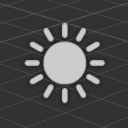

Directional lights
Warning
Приносим свои извинения за неудобства. Для этой страницы нет перевода на русский язык. Она будет отображаться на английском языке.
Beginner Designer Artist
Directional lights come uniformly from one direction. They're often used for simulating large, distant light sources such as the sun, and cast shadows. By default, new scenes you create in Stride contain a directional light.

The Scene Editor shows the position of directional lights with the following icon:

When you select a directional light, the gizmo displays the light's main direction:

Properties

| Property | Description |
|---|---|
| Color | The color of the light (RGB) |
| Shadow | See Shadow properties below |
| Intensity | The intensity of the light. The color is multiplied by this value before being sent to the shader. Note: negative values produce darkness and have unpredictable effects |
| Culling Mask | Defines which entity groups are affected by this light. By default, all groups are affected |
Shadows cast by directional lights
Like point lights and spot lights, directional lights cast shadows. However, shadows cast by directional lights can spawn across a large view range, so they require special treatment to improve their realism.
Directional lights use an additional technique, cascaded shadow mapping. This consists of rendering the depth of occluding objects from the point of view of the light to a texture, then rendering the scene taking the occluder information into account.
This method slices the depth range from the camera's point of view into different sections or "cascades" of different resolutions. The nearer each cascade is to the camera, the higher resolution it has, and the higher-resolution its shadows are.

Put simply, the closer shadows are to the camera, the better quality they are. This means you can spend more memory on shadows closer to the camera, where you can see them, and less on distant shadows.
You can have one, two, or four cascades. The more cascades you use, the more memory you save, but the lower resolution your shadows become over distance.
This an example of a shadow map generated from a directional light, using four cascades:

See shadow cascades in the editor
In the Property Grid, under the Shadow properties, enable the Debug option.
| Cascades debug off | Cascades debug on |
|---|---|
 |
 |
The different colors indicate the cascade for each distance range (Green: 0, Blue: 1, Purple: 2, Red: 3).
Directional light shadow properties
| Property | Description |
|---|---|
| Filter | Filtering produces soft shadows instead of hard shadows. Currently, the implemented technique is PCF (Percentage Closer Filtering) |
| Size | The size of the shadow map texture. For the directional light, this value is x1 by default, as a directional light has more visual impact than lights with shorter ranges |
| Cascade Count | The number of cascades used for slicing the range of depth covered by the light. Values are 1, 2 or 4 cascades; a typical scene uses 4 cascades |
| Stabilization mode |
|
| Depth Range | How the visible depth range from the camera's perspective is calculated. This directly affects how near and how far cascades splits occur |
| Blend Cascades | Smooths the transition between cascades |
| Partition mode |
|
| Depth Bias | The amount of depth to add to the sampling depth to avoid the phenomenon of shadow acne |
| Normal Offset Scale | A factor multiplied by the depth bias toward the normal |
| Debug | Displays the shadow map cascades in the Scene Editor |